Transfer Functions with Gears, DC Motors, and Electric Analogs
Control 2.4
Imron Rosyadi
Learning Objectives
By the end of this session, you should be able to:
- Relate gear tooth ratios to angular displacement and torque ratios.
- Reflect mechanical impedances (inertia, damping, stiffness) through gears and gear trains.
- Derive transfer functions for rotational mechanical systems with gears.
- Derive the transfer function of an armature-controlled DC motor and include a mechanical load.
- Use torque–speed curves to obtain electrical motor constants.
- Build electric circuit analogs (series and parallel) for mechanical systems.
Why Gears Matter in Control Systems
- Electric motors often do not directly match the desired load speed/torque.
- Gears trade speed for torque:
- Low gear (bike uphill): more torque, less speed.
- High gear (flat road): more speed, less torque.
- In control systems (robot joints, drives, antenna pointing, disk drives), gears help:
- Increase torque to move heavy loads.
- Reduce sensitivity to disturbances.
- Achieve desired speed and resolution.
Tip
Gears are a mechanical transformer: they transform angular displacement and torque between shafts.
Ideal Gear Pair – Geometry and Displacement
Consider two meshed spur gears:
- Gear 1: radius \(r_1\), \(N_1\) teeth, angle \(\theta_1(t)\), torque \(T_1(t)\)
- Gear 2: radius \(r_2\), \(N_2\) teeth, angle \(\theta_2(t)\), torque \(T_2(t)\)
At the contact point, the tangential displacement must match:
\[ r_1 \theta_1 = r_2 \theta_2 \]
So the angular displacements are related by
\[ \frac{\theta_2}{\theta_1} = \frac{r_1}{r_2} = \frac{N_1}{N_2} \]
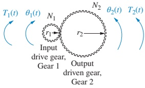
Note
Output angle is inversely proportional to gear radius / teeth. Larger output gear → smaller output angle for the same input angle.
Ideal Gear Pair – Torque Relationship
Assume lossless gears (no energy stored or lost in the teeth). Power in = power out.
Rotational work (energy) = torque × angular displacement:
\[ T_1 \theta_1 = T_2 \theta_2 \]
Using the displacement ratio
\[ \frac{\theta_2}{\theta_1} = \frac{N_1}{N_2} \]
we get
\[ \frac{T_2}{T_1} = \frac{\theta_1}{\theta_2} = \frac{N_2}{N_1} \]
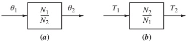
Angle ratio (from Gear 1 to Gear 2):
\[ \dfrac{\theta_2}{\theta_1} = \dfrac{N_1}{N_2} \]
Torque ratio (from Gear 1 to Gear 2):
\[ \dfrac{T_2}{T_1} = \dfrac{N_2}{N_1} \]
Important
Gears invert the ratio:
- Smaller angle → larger torque,
- Larger angle → smaller torque.
Reflecting Mechanical Impedances Through Gears
We often want to “remove” the gears from the diagram and reflect the load back to one shaft.
Consider a load inertia–damper–spring at Gear 2:
- Inertia: \(J\)
- Damping: \(D\)
- Stiffness: \(K\)
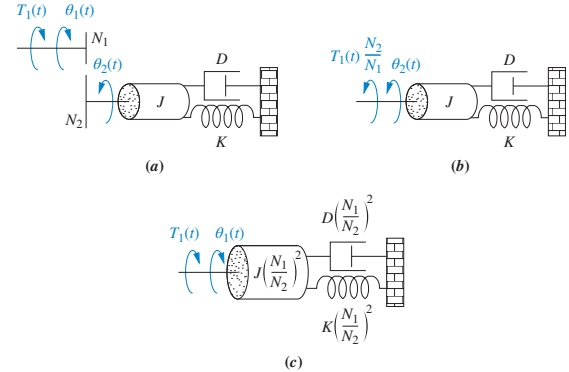
From the gear relations and equations of motion, the equivalent system at \(\theta_1\) (input shaft) becomes
\[ \left[ J\left(\frac{N_1}{N_2}\right)^2 s^2 + D\left(\frac{N_1}{N_2}\right)^2 s + K\left(\frac{N_1}{N_2}\right)^2 \right] \theta_1(s) = T_1(s) \]
So each mechanical impedance term (inertia, damping, stiffness) is multiplied by \(\left(\dfrac{N_1}{N_2}\right)^2\) when reflected from Gear 2 back to Gear 1.
General Reflection Rule for Gears
General Rule: A rotational mechanical impedance (inertia, damping, stiffness) attached to a source shaft and reflected to a destination shaft is scaled by
\[ \left( \frac{\text{Number of teeth of gear on destination shaft}} {\text{Number of teeth of gear on source shaft}} \right)^2 \]
Equivalently, using radii \(r\):
\[ Z_\text{dest} = Z_\text{source} \left( \frac{r_\text{dest}}{r_\text{source}} \right)^2 \]
Tip
Think of gears as a mechanical impedance transformer: impedances scale with square of gear ratio, torques with first power of ratio, angles with inverse ratio.
Example 2.21 – Lossless Gears: Concept
Problem: Find the transfer function \(G(s) = \dfrac{\theta_2(s)}{T_1(s)}\) for the rotational system with gears in Figure 2.30(a).
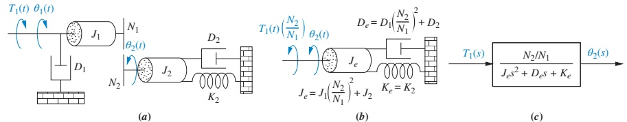
Key ideas:
- Shafts are gear-coupled → motions are not independent → only one degree of freedom.
- We reflect all input-side elements (\(J_1, D_1, T_1\)) to the output shaft (Gear 2) to write a single equation.
Example 2.21 – Lossless Gears: Reflection and Transfer Function
Reflect input torque and impedances to the output:
- \(J_1\) and \(D_1\) scaled by \(\left(\dfrac{N_2}{N_1}\right)^2\)
- \(T_1\) scaled by \(\left(\dfrac{N_2}{N_1}\right)\)
Resulting equivalent system at \(\theta_2\):
\[ (J_e s^2 + D_e s + K_e)\theta_2(s) = T_1(s)\frac{N_2}{N_1} \]
where
\[ J_e = J_1\left(\frac{N_2}{N_1}\right)^2 + J_2, \quad D_e = D_1\left(\frac{N_2}{N_1}\right)^2 + D_2, \quad K_e = K_2 \]
Solve for the transfer function:
\[ G(s) = \frac{\theta_2(s)}{T_1(s)} = \frac{N_2/N_1}{J_e s^2 + D_e s + K_e} \]
which is represented as a standard second-order system in Figure 2.30(c).
Note
The structure (second order) is familiar; the effective parameters \(J_e, D_e, K_e\) embed the gear effects.
Gear Trains – Cascaded Gear Ratios
For large gear ratios, we use gear trains: multiple gear pairs in series.
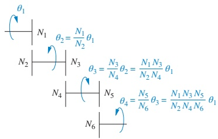
From Figure 2.31,
\[ \theta_4 = \frac{N_1 N_3 N_5}{N_2 N_4 N_6}\, \theta_1 \]
So the equivalent gear ratio from \(\theta_1\) to \(\theta_4\) is
\[ \frac{\theta_4}{\theta_1} = \prod_{k} \left( \frac{N_{\text{driver},k}}{N_{\text{driven},k}} \right) \]
Tip
For cascaded gear trains:
- Overall displacement ratio = product of individual displacement ratios.
- Impedance reflection factors use the corresponding overall ratio (squared).
Example 2.22 – Gear Train with Losses: Concept
Problem: Find \(G(s) = \dfrac{\theta_1(s)}{T_1(s)}\) for the multi-stage gear system in Figure 2.32(a).
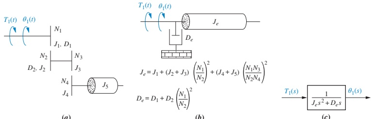
This time:
- Gears are not lossless:
- Gear inertias \(J_2, J_3, J_4, J_5\)
- Damping \(D_2\) about intermediate shafts
- We want a single equation at \(\theta_1\) (input shaft).
Strategy:
- Reflect each inertia and damper to \(\theta_1\) using the appropriate gear ratios.
- Ratios are different for each element, depending on how many gear stages they cross.
Example 2.22 – Gear Train with Losses: Reflection
After reflecting all impedances to \(\theta_1\):
Equivalent inertia at input:
\[ J_e = J_1 + (J_2 + J_3)\left(\frac{N_1}{N_2}\right)^2 + (J_4 + J_5)\left(\frac{N_1 N_3}{N_2 N_4}\right)^2 \]
Equivalent damping at input:
\[ D_e = D_1 + D_2\left(\frac{N_1}{N_2}\right)^2 \]
Resulting equation of motion:
\[ (J_e s^2 + D_e s)\theta_1(s) = T_1(s) \]
So the transfer function is
\[ G(s) = \frac{\theta_1(s)}{T_1(s)} = \frac{1}{J_e s^2 + D_e s} \]
Warning
Be meticulous: Each \(J\) and \(D\) may see zero, one, or two gear ratios. Compute the exact overall ratio from each element’s shaft to the reference shaft.
Skill-Assessment 2.10 – Check Your Understanding
Problem: Find the transfer function \(G(s) = \theta_2(s)/T(s)\) for the rotational mechanical system with gears shown in Figure 2.33.
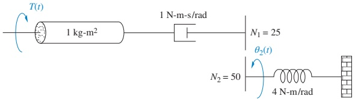
Book Answer:
\[ G(s) = \frac{1/2}{s^2 + s + 1} \]
Tip
Try to reproduce the answer by:
- Finding the appropriate gear ratio(s).
- Reflecting impedances to a single shaft.
- Writing the equation of motion.
- Solving for \(\theta_2(s)/T(s)\).
From Mechanical to Electromechanical
So far we modeled:
- Purely mechanical rotational systems (with gears).
Now we extend to electromechanical systems:
- Electrical input (voltage, current)
- Mechanical output (shaft rotation, speed, torque)
Applications in ECE:
- Robot arm joints
- Antenna pointing systems
- Disk and tape drive actuators
- Flight simulators and haptic devices
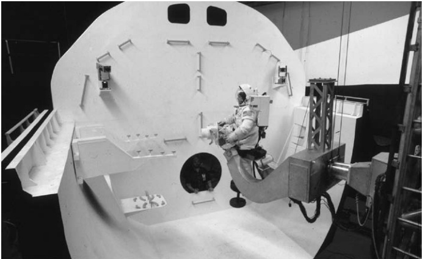
Armature-Controlled DC Motor – Structure
- Fixed field (permanent magnet or field winding) → provides \(B\), the magnetic field.
- Armature: rotating conductor with current \(i_a(t)\) → experiences force \(F = B l i_a\).
- Torque produced turns the rotor with angle \(\theta_m(t)\) and angular speed \(\omega_m(t)\).
Two key electromagnetic relationships:
Torque from current:
\[ T_m(s) = K_t I_a(s) \]
Back EMF from speed:
\[ v_b(t) = K_b \frac{d\theta_m(t)}{dt} = K_b \omega_m(t) \Rightarrow V_b(s) = K_b s \theta_m(s) \]
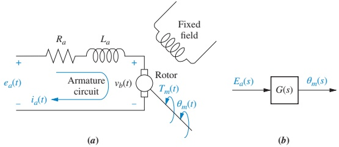
Motor Armature Circuit and Back EMF
Electrical loop around the armature:
- Armature resistance: \(R_a\)
- Armature inductance: \(L_a\)
- Back EMF: \(V_b(s)\)
- Applied voltage: \(E_a(s)\)
Kirchhoff’s voltage law:
\[ R_a I_a(s) + L_a s I_a(s) + V_b(s) = E_a(s) \]
Substitute \(V_b(s) = K_b s \theta_m(s)\) and \(I_a(s) = \dfrac{1}{K_t} T_m(s)\) to couple the electrical and mechanical domains.
Note
The back EMF \(V_b\) acts like a negative feedback in the motor:
- Faster rotation → larger \(V_b\) → reduces armature current → limits torque.
Mechanical Loading of the Motor
Mechanical side (shaft dynamics):
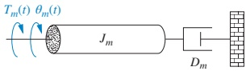
- Equivalent inertia at armature: \(J_m\)
- Equivalent viscous damping: \(D_m\)
Equation in Laplace domain:
\[ T_m(s) = (J_m s^2 + D_m s)\, \theta_m(s) \]
This \(J_m\) and \(D_m\) include both:
- Motor’s own inertia and damping.
- Load inertia and damping reflected through gear(s) to the armature shaft.
DC Motor Transfer Function (Neglecting Armature Inductance)
Substitute \(T_m(s)\) and \(V_b(s)\) into the armature KVL, assuming \(L_a\) is small:
Start with
\[ \frac{(R_a + L_a s)T_m(s)}{K_t} + K_b s \theta_m(s) = E_a(s) \]
With \(L_a \approx 0\):
\[ \frac{R_a}{K_t} T_m(s) + K_b s \theta_m(s) = E_a(s) \]
Use \(T_m(s) = (J_m s^2 + D_m s)\theta_m(s)\):
\[ \left[\frac{R_a}{K_t} (J_m s^2 + D_m s) + K_b s \right]\theta_m(s) = E_a(s) \]
Rearrange:
\[ \left[\frac{R_a}{K_t} (J_m s + D_m) + K_b \right] s \theta_m(s) = E_a(s) \]
So the transfer function is
\[ \frac{\theta_m(s)}{E_a(s)} = \frac{K_t/(R_a J_m)}{s\left[s + \frac{1}{J_m} \left(D_m + \frac{K_t K_b}{R_a}\right)\right]} \]
or in simplified form
\[ \frac{\theta_m(s)}{E_a(s)} = \frac{K}{s(s + \alpha)} \]
Important
A DC motor (with this approximation) behaves like:
- One integrator (from speed to position), and
- One stable first-order pole (electromechanical time constant).
Including the Gear and Load – Effective \(J_m\) and \(D_m\)
Consider a motor with armature inertia \(J_a\) and damping \(D_a\), driving a load of inertia \(J_L\) and damping \(D_L\) through a gear pair with ratio \(N_1:N_2\) (armature:load):
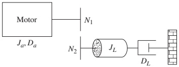
Reflect \(J_L\) and \(D_L\) to the armature:
\[ J_m = J_a + J_L\left(\frac{N_1}{N_2}\right)^2 \]
\[ D_m = D_a + D_L\left(\frac{N_1}{N_2}\right)^2 \]
Use these \(J_m\) and \(D_m\) in the DC motor transfer function
\[ \frac{\theta_m(s)}{E_a(s)} = \frac{K_t/(R_a J_m)}{s\left[s + \frac{1}{J_m} \left(D_m + \frac{K_t K_b}{R_a}\right)\right]} \]
Determining Electrical Constants via Torque–Speed Curves
Start from the DC motor steady-state equation (with \(L_a=0\)):
\[ \frac{R_a}{K_t}T_m(s) + K_b s \theta_m(s) = E_a(s) \]
Inverse Laplace and assume DC (steady-state) operation:
\[ \frac{R_a}{K_t}T_m + K_b \omega_m = e_a \]
Solve for torque:
\[ T_m = -\frac{K_b K_t}{R_a}\omega_m + \frac{K_t}{R_a} e_a \]
This is a straight line in the torque–speed plane:
Intercept at \(\omega_m = 0\): stall torque
\[ T_{\text{stall}} = \frac{K_t}{R_a}e_a \]
Intercept at \(T_m = 0\): no-load speed
\[ \omega_{\text{no-load}} = \frac{e_a}{K_b} \]
Thus
\[ \frac{K_t}{R_a} = \frac{T_{\text{stall}}}{e_a}, \quad K_b = \frac{e_a}{\omega_{\text{no-load}}} \]
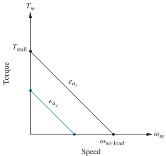
Tip
A dynamometer test (measuring stall torque and no-load speed for a given \(e_a\)) gives the motor constants needed in the transfer function.
Example 2.23 – DC Motor and Load
Problem: Given the DC motor, load, gear ratio, and torque–speed curve in Figure 2.39, find \(G(s) = \dfrac{\theta_L(s)}{E_a(s)}\).
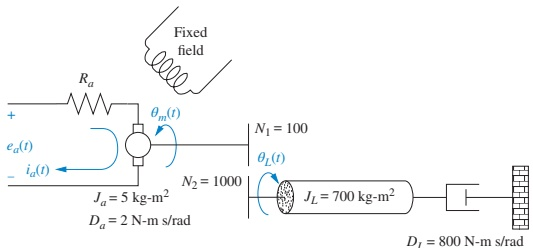
Example 2.23 – DC Motor and Load
Step 1: Mechanical Constants
From the data:
\[ J_m = J_a + J_L\left(\frac{N_1}{N_2}\right)^2 = 5 + 700\left(\frac{1}{10}\right)^2 = 12 \]
\[ D_m = D_a + D_L\left(\frac{N_1}{N_2}\right)^2 = 2 + 800\left(\frac{1}{10}\right)^2 = 10 \]
From the torque–speed curve:
- Stall torque: \(T_{\text{stall}} = 500\)
- No-load speed: \(\omega_{\text{no-load}} = 50\)
- Input voltage: \(e_a = 100\)
Example 2.23 – DC Motor and Load
Then
\[ \frac{K_t}{R_a} = \frac{T_{\text{stall}}}{e_a} = \frac{500}{100} = 5 \]
\[ K_b = \frac{e_a}{\omega_{\text{no-load}}} = \frac{100}{50} = 2 \]
Plug into the motor transfer function:
\[ \frac{\theta_m(s)}{E_a(s)} = \frac{5/12}{s\left\{s + \frac{1}{12}[10 + (5)(2)]\right\}} = \frac{0.417}{s(s + 1.667)} \]
Use gear ratio \(\dfrac{N_1}{N_2} = \dfrac{1}{10}\) to get load angle:
\[ \frac{\theta_L(s)}{E_a(s)} = \frac{0.0417}{s(s + 1.667)} \]
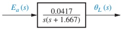
Note
Notice: The poles (dynamics) do not change with this simple gear scaling; the gear changes only the output gain between \(\theta_m\) and \(\theta_L\).
Skill-Assessment 2.11 – Motor + Gear + Load
Problem: For the electromechanical system shown in Figure 2.40, with torque–speed curve
\[ T_m = -8\omega_m + 200 \]
at \(e_a = 100\ \text{V}\), find
\[ G(s) = \frac{\theta_L(s)}{E_a(s)} \]
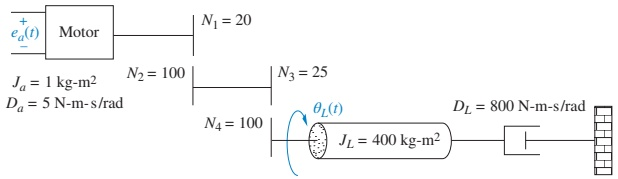
Answer:
\[ G(s) = \frac{1/20}{s\left[s + \dfrac{15}{2}\right]} \]
Tip
To solve:
- Extract \(K_t/R_a\) and \(K_b\) from the torque–speed relation.
- Reflect load inertia/damping through gears to find \(J_m\) and \(D_m\).
- Use the DC motor transfer function formula.
- Include gear ratio between motor and load angles.
Electric Circuit Analogs
Mechanical → Electrical analogs:
- Let us reuse circuit intuition and tools (nodal/mesh analysis, SPICE simulation).
- Reveal deep similarities between energy-storage systems across domains.
- Provide alternative ways to derive equations of motion.
Two main types:
- Series analog (mesh equations ↔︎ equations of motion in velocity).
- Parallel analog (nodal equations ↔︎ equations of motion in velocity).
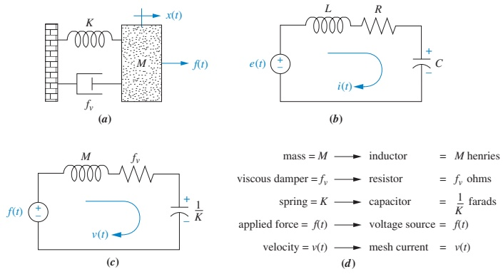
Series Analog – Single Mass–Spring–Damper
Equation of motion (Laplace, displacement):
\[ (M s^2 + f_v s + K) X(s) = F(s) \]
To match with current-based mesh equations, rewrite in terms of velocity \(V(s) = s X(s)\):
\[ \left(M s + f_v + \frac{K}{s}\right) V(s) = F(s) \]
Electrical series RLC mesh:
\[ (L s + R + \frac{1}{C s}) I(s) = E(s) \]
Analog mapping (series type):
- Velocity \(V(s)\) ↔︎ Current \(I(s)\)
- Force \(F(s)\) ↔︎ Voltage \(E(s)\)
- Mass \(M\) ↔︎ Inductance \(L\)
- Viscous damping \(f_v\) ↔︎ Resistance \(R\)
- Spring constant \(K\) ↔︎ Inverse of capacitance \(1/C\)
Note
In a series analog, mechanical impedances map onto series electrical impedances.
Series Analog – Multi-Mass System (Example 2.24)
Problem: Draw a series analog for the mechanical system of Figure 2.17(a).
Mechanical equations (after converting to velocity):
\[ \left[M_1 s + (f_{v_1}+f_{v_3}) + \frac{K_1+K_2}{s}\right]V_1(s) - \left(f_{v_3}+\frac{K_2}{s}\right)V_2(s) = F(s) \]
\[ -\left(f_{v_3}+\frac{K_2}{s}\right)V_1(s) + \left[M_2 s+(f_{v_2}+f_{v_3})+\frac{K_2+K_3}{s}\right]V_2(s) = 0 \]
Coefficients correspond to sums of series impedances:
- Impedances tied to motion of \(M_1\) → first mesh.
- Impedances between \(M_1\) and \(M_2\) → shared between both meshes.
- Impedances tied to \(M_2\) → second mesh.
Result:
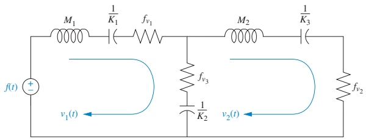
Parallel Analog – Single Mass–Spring–Damper
Now we match with nodal equations instead of mesh equations.
Electrical parallel RLC node:
\[ \left(C s + \frac{1}{R} + \frac{1}{L s}\right) E(s) = I(s) \]
Mechanical equation in velocity form:
\[ \left(M s + f_v + \frac{K}{s}\right) V(s) = F(s) \]
If we identify - Velocity \(V(s)\) ↔︎ Voltage \(E(s)\) - Force \(F(s)\) ↔︎ Current \(I(s)\) then
- \(M\) ↔︎ \(1/L\) (since \(1/(L s)\) term aligns with mass term when seen as admittance)
- \(f_v\) ↔︎ \(1/R\)
- \(K\) ↔︎ \(C\)
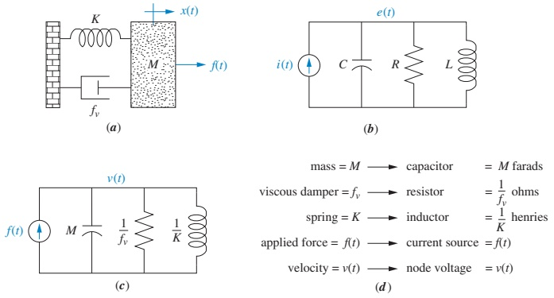
Note
In a parallel analog, - Velocity ↔︎ voltage, - Force ↔︎ current, - Mechanical admittances map onto electrical admittances.
Parallel Analog – Multi-Mass System (Example 2.25)
Problem: Draw a parallel analog for the mechanical system of Figure 2.17(a).
Starting from the same mechanical equations (in velocity form), interpret each coefficient as a sum of admittances:
- Admittances associated with \(M_1\) connect to node 1.
- Admittances between \(M_1\) and \(M_2\) connect between node 1 and node 2.
- Admittances associated with \(M_2\) connect to node 2.
Resulting parallel analog:
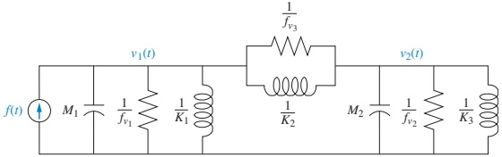
Skill-Assessment 2.12 – Rotational Analogs
Problem: Draw a series and parallel analog for the rotational mechanical system of Figure 2.22.
(Hint: use rotational analogs of mass, damping, spring: inertia \(J\), viscous damping \(D\), torsional stiffness \(K\).)
Answer available online.
Tip
Workflow:
- Write equations of motion in Laplace domain.
- Convert to angular velocity (if needed).
- Match with either mesh (series analog) or nodal (parallel analog) equations.
- Map each rotational element to an R, L, or C appropriately.
Summary / Key Points
- Gears:
- \(\dfrac{\theta_2}{\theta_1} = \dfrac{N_1}{N_2}\), \(\dfrac{T_2}{T_1} = \dfrac{N_2}{N_1}\).
- Mechanical impedances reflect through gears with the square of gear ratio.
- Gear trains multiply individual ratios to get an overall ratio.
- Rotational systems with gears:
- Reflect all load impedances to a single shaft; then write one equation of motion.
- Transfer functions look like standard 1st or 2nd order forms with effective \(J\), \(D\), \(K\).
- DC motor modeling:
- Electrical: \(R_a I_a + L_a s I_a + K_b s \theta_m = E_a\).
- Mechanical: \(T_m = (J_m s^2 + D_m s)\theta_m\), \(T_m = K_t I_a\).
- Combined TF (ignoring \(L_a\)): \(\dfrac{\theta_m}{E_a} = \dfrac{K_t/(R_a J_m)}{s\left[s + \dfrac{1}{J_m}\left(D_m + \dfrac{K_t K_b}{R_a}\right)\right]}\).
- Torque–speed curves:
- Provide \(K_t/R_a\) and \(K_b\) via stall torque and no-load speed.
- Electric circuit analogs:
- Series analog: velocity ↔︎ current, force ↔︎ voltage; impedances in series.
- Parallel analog: velocity ↔︎ voltage, force ↔︎ current; admittances in parallel.
Formula Summary
Gear relationships (ideal, lossless):
Displacement ratio:
\[ \frac{\theta_2}{\theta_1} = \frac{r_1}{r_2} = \frac{N_1}{N_2} \]
Torque ratio:
\[ \frac{T_2}{T_1} = \frac{\theta_1}{\theta_2} = \frac{N_2}{N_1} \]
Impedance reflection (source → destination):
\[ Z_\text{dest} = Z_\text{source} \left( \frac{\text{teeth at destination shaft}} {\text{teeth at source shaft}} \right)^2 \]
Gear train overall ratio:
\[ \theta_\text{out} = \left(\prod_k \frac{N_{\text{driver},k}}{N_{\text{driven},k}}\right)\theta_\text{in} \]
DC motor relationships:
Back EMF:
\[ v_b(t) = K_b \omega_m(t), \quad V_b(s) = K_b s \theta_m(s) \]
Torque–current:
\[ T_m(s) = K_t I_a(s) \]
Armature circuit (Laplace):
\[ R_a I_a(s) + L_a s I_a(s) + K_b s \theta_m(s) = E_a(s) \]
Mechanical load at armature:
\[ T_m(s) = (J_m s^2 + D_m s)\theta_m(s) \]
Effective inertia/damping (with gear ratio \(N_1:N_2\)):
\[ J_m = J_a + J_L\left(\frac{N_1}{N_2}\right)^2, \quad D_m = D_a + D_L\left(\frac{N_1}{N_2}\right)^2 \]
Transfer function (neglect \(L_a\)):
\[ \frac{\theta_m(s)}{E_a(s)} = \frac{K_t/(R_a J_m)}{s\left[s + \frac{1}{J_m} \left(D_m + \frac{K_t K_b}{R_a}\right)\right]} \]
Torque–speed curve quantities:
Stall torque:
\[ T_{\text{stall}} = \frac{K_t}{R_a} e_a \]
No-load speed:
\[ \omega_{\text{no-load}} = \frac{e_a}{K_b} \]
Electrical constants:
\[ \frac{K_t}{R_a} = \frac{T_{\text{stall}}}{e_a}, \quad K_b = \frac{e_a}{\omega_{\text{no-load}}} \]
Electric analog mappings (summary):
Series analog (mesh):
- Velocity \(V\) ↔︎ Current \(I\)
- Force \(F\) ↔︎ Voltage \(E\)
- \(M\) ↔︎ \(L\), \(f_v\) ↔︎ \(R\), \(K\) ↔︎ \(1/C\)
Parallel analog (node):
- Velocity \(V\) ↔︎ Voltage \(E\)
- Force \(F\) ↔︎ Current \(I\)
- \(M\) ↔︎ \(1/L\), \(f_v\) ↔︎ \(1/R\), \(K\) ↔︎ \(C\)
Interactive
Using This Interactive Deck
- This addendum lets you experiment with gears, DC motors, and analogs using live Python (Pyodide) and Observable JS (OJS) directly in the browser.
- You can:
- Change gear tooth counts and see how angles and torques change.
- Explore how reflected inertia changes with gear ratio.
- Visualize DC motor step responses as you vary parameters.
- See how motor torque–speed lines depend on motor constants.
Tip
Change the sliders and code, then click Run Code in the Python cells to see how the system behavior changes in real time.
1. Interactive Code – Gear Ratios (Static Relationships)
Play with the basic gear formulas:
- \(\displaystyle \frac{\theta_2}{\theta_1} = \frac{N_1}{N_2}\)
- \(\displaystyle \frac{T_2}{T_1} = \frac{N_2}{N_1}\)
Note
Try:
- Make \(N_1 < N_2\) (gear reduction).
- Make \(N_1 > N_2\) (gear up). Observe how angle and torque ratios swap.
2. Reactive Visualization – Gear Impedance Reflection
We know that when reflecting a load inertia \(J_L\) through a gear ratio,
\[ J_\text{reflected} = J_L \left(\frac{N_\text{dest}}{N_\text{source}}\right)^2 \]
Use the sliders to see how reflected inertia changes with gear ratio.
Tip
Interpretation:
- Fix \(J_L\) and \(N_\text{source}\), vary \(N_\text{dest}\).
- Larger \(N_\text{dest}\) (bigger gear at destination) → larger reflected inertia at the source.
3. Interactive Code – Gear Train Overall Ratio
Experiment with a 3-stage gear train like in Figure 2.31.
We use
\[ \theta_4 = \frac{N_1 N_3 N_5}{N_2 N_4 N_6} \theta_1 \]
Note
Modify the \(N\) values to see how cascading several modest ratios can create a large overall reduction.
4. Reactive DC Motor – Step Response vs. Parameters
We model the DC motor (position output) as
\[ \frac{\theta_m(s)}{E_a(s)} = \frac{K}{s(s + \alpha)} \]
where
- \(K = \dfrac{K_t}{R_a J_m}\)
- \(\alpha = \dfrac{1}{J_m}\left(D_m + \dfrac{K_t K_b}{R_a}\right)\)
Use sliders to vary \(K\) and \(\alpha\) and see the step response.
Tip
Observations:
- Larger \(\alpha\) → faster response (more damping/electrical braking).
- Larger \(K\) → greater steady-state slope (more motion per volt).
5. Reactive DC Motor – Torque–Speed Line Explorer
We derived the steady-state torque–speed relationship:
\[ T_m = -\frac{K_b K_t}{R_a}\,\omega_m + \frac{K_t}{R_a} e_a \]
Use sliders to vary \(K_t/R_a\), \(K_b\), and \(e_a\) and see the line.
Note
Questions to explore:
- What happens to the line if you double \(e_a\)?
- How does increasing \(K_b\) (stronger back EMF) change no-load speed and slope?
- How does increasing \(K_t/R_a\) change stall torque?
6. Interactive Code – Compute \(J_m\) and \(D_m\) with Gears
Given
\[ J_m = J_a + J_L\left(\frac{N_1}{N_2}\right)^2, \quad D_m = D_a + D_L\left(\frac{N_1}{N_2}\right)^2 \]
experiment with different gear ratios and load values.
Tip
Try changing \(N_1/N_2\) to 1/5, 1/10, 1/20, etc. Observe how \(J_m\) and \(D_m\) scale with the square of the gear ratio.
7. Reactive – First-Order Mechanical Load via Gear Ratio
We can visualize how gear ratio affects a first-order load dynamics in angle:
\[ G(s) = \frac{\theta(s)}{T(s)} = \frac{1}{J_\text{eff} s^2 + D_\text{eff} s} \]
where \(J_\text{eff}, D_\text{eff}\) depend on gear ratio.
viewof N1_slider = Inputs.range([1, 20], {step: 1, label: "N1 (motor gear teeth)"})
viewof N2_slider = Inputs.range([1, 50], {step: 1, label: "N2 (load gear teeth)"})
viewof JL_slider = Inputs.range([10, 1000], {step: 10, label: "Load inertia J_L"})
viewof DL_slider = Inputs.range([10, 1000], {step: 10, label: "Load damping D_L"})Warning
This is a rough approximation, but it illustrates:
- Larger reflected \(J_m\) → slower angle response.
- Larger reflected \(D_m\) → more damping, shorter transient.
8. Interactive – Series Analog Parameter Mapping
Recall series analog mapping (single-DOF translational):
- \(M\) ↔︎ \(L\), \(f_v\) ↔︎ \(R\), \(K\) ↔︎ \(1/C\)
Try mapping a given mechanical system to RLC values.
Note
Modify \(M\), \(f_v\), and \(K\). Think about how a heavier mass translates to larger inductance, and stiffer spring to a smaller capacitance.
9. Reactive – Parallel Analog Admittance Matching
For the parallel analog, the mapping is (single-DOF):
- \(M\) ↔︎ \(1/L\), \(f_v\) ↔︎ \(1/R\), \(K\) ↔︎ \(C\)
Use sliders to see electrical parameters for a given mechanical system.
Tip
Compare this to the series analog mapping:
- Here, mass → inverse inductance; in series analog, mass → inductance. This is why we call this an admittance-based (parallel) analog.
10. Wrap-Up – What to Try Next
To deepen your understanding, try these mini-challenges in this deck:
- Gear design exercise:
- Choose a target overall ratio (e.g., 50:1) and find a 3-stage gear train with modest ratios whose product is near 50.
- Use the gear train code to confirm \(\theta_\text{out}/\theta_\text{in}\).
- Motor selection exercise:
- Use the torque–speed explorer: pick \(K_t/R_a\), \(K_b\), \(e_a\) to achieve a desired stall torque and no-load speed.
- Load matching exercise:
- For a heavy load (\(J_L\) large), adjust \(N_1/N_2\) to make \(J_m\) small enough that the motor response is “fast,” but not so small that back-driving becomes impossible.
- Analog modeling exercise:
- Map a two-mass mechanical system to both series and parallel analogs (on paper), then use the mapping code to check individual parameter conversions.
Important
Use these interactive tools as a sandbox: change parameters, observe results, and connect them back to the equations in the main lecture. This is how theory becomes engineering intuition.